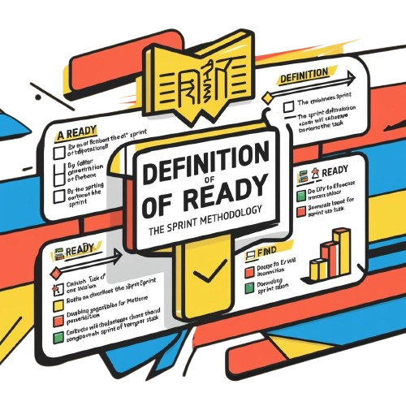
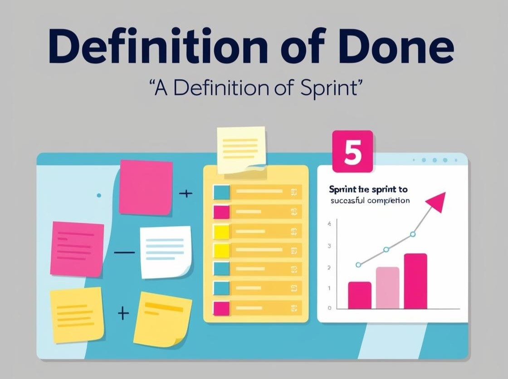

O QUE SÃO?
Os artefatos são ferramentas de gerenciamento utilizadas no scrum que além de auxiliarem no
planejamento também fornecem informações importantes para a equipe e os demais interessados no projeto.
A seguir, você verá mais detalhadamente sobre cada ferramenta e sua elaboração.
BACKLOG DO PRODUTO

O Backlog é uma lista de todos os requisitos, melhorias e correções do produto, ou seja, tudo aquilo que
deve ser desenvolvido pela equipe. Esse documento está em constante alteração, passando por redefinições
de prioridade conforme necessário. O Product Owner é o responsável por criar e alterar essa lista, satisfazendo
as necessidades do cliente.
Como montar o Backlog?
O Product Owner deve conversar com o cliente e fazer um levantamento de todos os requisitos. Após entender a
visão do produto, as Epics, funcionalidades de maior nível, devem ser identificadas e priorizadas em relação
as demais tarefas. Depois, essas Epics devem ser divididas em User Story (você entenderá melhor esse conceito
mais abaixo) e as tarefas devem ser divididas por de prioridade. Por fim, é essencial fazer uma estimativa
para cada item do backlog, conforme o nível de dificuldade.
BURNDOWN
O Burndown é um gráfico que representa a relação entre a estimativa para o
período de conclusão das atividades e o período real de conclusão. Esse artefato permite que o
grupo tenha uma visão clara sobre o progresso das atividades e as possíveis dificuldades enfrentadas em relação
ao tempo de finalização.

Como criar um Burndown?
Para criar um gráfico de Burndown o Scrum Master deve estimar o esforço necessário para
concluir cada tarefa da sprint, determinando um limite de tempo. É natural que a diferença entre a linha
que representa o trabalho real seja diferente da estimativa, afinal, podem existir muitos imprevistos ao longo
do desenvolvimento que atrasem a conclusão das atribuições. Da mesma forma, o grupo também pode estar muito adiantado
na entrega dos resultados, pois o foco está em analisar e acompanhar o progresso, e não em seguir estritamente a
estimativa.
USER STORY
São tarefas menores extraídas do backlog que descrevem uma necessidade do usuário a partir do seu próprio ponto de
vista. Geralmente uma User Story segue o seguinte formato: Como [usuário], eu quero a [ação] para [benefício].
QUEM?
POR QUE?
O QUE?
Como fazer uma User Story?

As tarefas devem ser listadas no formato descrito acima e classificadas de acordo com o nível de prioridade.
Também é necessário que a User Story seja acompanhada por um critério de aceitação, que define o que é necessário
para que a tarefa seja concluída.
DOR E DOD


DOR, Definition of Ready, são os critérios que detalham o que uma user story precisa conter para que possa ser executada
pelo time. Enquanto DOD, Definition of Done, é a definição daquilo que foi feito. Ambas as ferramentas são importantes para
trazer tranparência ao processo de desenvolvimento, sendo critérios de entrada e saída, o DOR verificando se o item está pronto
para ser levado para teste e o DOD se um item está pronto para ser movido para a próxima etapa.
MVP
O MVP, Mínimo Produto Viável, é uma versão simplificada do produto que representa uma entrega de valor para o cliente. Ou seja,
o MVP contém as funcionalidades necessárias para resolver o problema do cliente, porém não está completo. Como essa
ferramenta é rapidamente lançada no mercado, os desenvolvedores possuem a vantagem de obter um feedback do produto e validar
o investimento.
Como fazer o MVP?
Deve-se considerar a necessidade do cliente, pois mesmo que o MVP seja uma versão incompleta do produto, ele deve ter funcionalidades
suficientes para representar uma entrega de valor. Ou seja, elabore o produto pensando no que o cliente precisa.